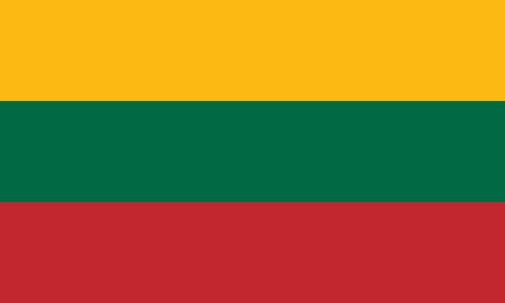

Szczyty
| L.p. | Flaga | Kraj | Nazwa Szczytu | Wysokość (m n.p.m.) |
Data | Zdobyty | Kolejność | Kto zdobył | Link |
|---|---|---|---|---|---|---|---|---|---|
| 1. |  |
Bułgaria | Musała | 2952 | 01.06.2022 | ✅ | 1 | Jan Kowalski | Kliknij tu po szczegóły wejścia |
| 2. |  |
Serbia | Midżur | 2169 | 15.07.2022 | ✅ | 2 | Anna Nowak | Kliknij tu po szczegóły wejścia |
| 3. | Estonia | Suur Munamägi | 318 | 23.08.2022 | ✅ | 3 | Jan Kowalski | Kliknij tu po szczegóły wejścia | |
| 4. | Łotwa | Gaiziņkalns | 312 | 05.09.2022 | ✅ | 4 | Anna Nowak | Kliknij tu po szczegóły wejścia | |
| 5. |  | Litwa | Aukštojas | 294 | 19.10.2022 | ❌ | 5 | Jan Kowalski | Kliknij tu po szczegóły wejścia |